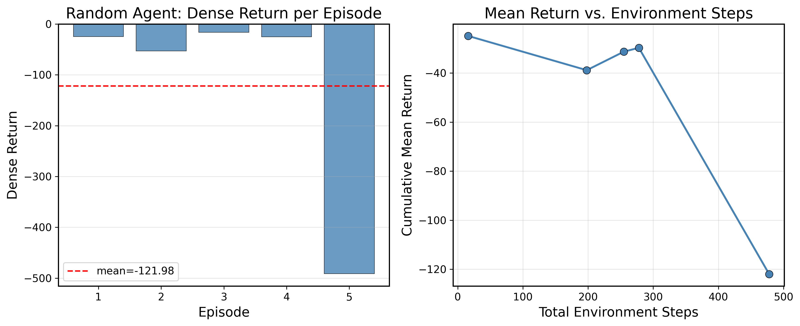

Abstract
This proposal outlines a framework for achieving sample-efficient policy learning for the LiftPot task within the RoboEval framework, a MuJoCo-based environment requiring coordinated bimanual manipulation to grasp and lift a pot. We first establish a performance baseline by evaluating a random agent against an initial dense reward function composed of spatial distance, pose errors, and subtask progress. To address the complexities of bimanual coordination, we propose two primary modifications: (1) fine-tuning a pre-trained OpenVLA-7B model using RL to leverage foundation model representations for faster convergence, and (2) the iterative refinement of a dense reward function. This second modification focuses on redesigning the initial reward to better capture the complex contact dynamics and physical constraints essential for successful bimanual lifting.
Environment
We evaluate our policy on the LiftPot task from the RoboEval benchmark [1], a bimanual manipulation environment built on the MuJoCo [2] physics engine. The task requires a bimanual Franka Panda robot—consisting of two 7-DOF arms with parallel grippers and an optional 4-DOF floating base—to grasp a kitchen pot by both handles, lift it above a height threshold, and maintain an upright orientation. Four task variants introduce increasing difficulty by randomizing the pot's initial position and orientation.
At each timestep, the agent receives a dictionary observation comprising proprioceptive signals (joint positions and velocities for both arms, gripper openness, and floating base state) as well as RGB and/or depth images from configurable cameras such as the head-mounted and wrist-mounted views. The agent produces a continuous action vector whose structure depends on the chosen control mode. In the default joint-position mode, this is a 20-dimensional vector specifying floating base commands, joint targets for each arm, and gripper commands. Alternatively, an end-effector mode allows the agent to specify Cartesian pose targets, which are internally converted to joint commands via inverse kinematics. The environment provides a sparse binary reward, returning $r=1$ only upon successful task completion.
Beyond the binary success signal, the environment records a rich set of diagnostic metrics: four subtask stages (left grasp, right grasp, lift, stable lift), bimanual coordination quality, collision counts, motion smoothness (Cartesian and joint-space jerk), path efficiency, grip slip counts, and task accuracy (lift distance, gripper-to-pot distances, pot orientation error).
Dense Reward
We propose a dense reward function as a baseline to evaluate a random agent, since the RoboEval framework only provides a binary sparse reward, which is always 0 with random actions. The reward function at time step $t$ is:
where $d_t^{\text{left}}$ and $d_t^{\text{right}}$ are the Euclidean distances from the left and right grippers to the pot (in meters), $p_t \in [0, 1]$ is the subtask progress defined as the fraction of completed stages out of four, $\Delta h_t = h_t - h_0$ is the pot's height above its initial resting position, and $e_t^{\text{pose}}$ is the angular deviation from the upright orientation (in radians).
The first term encourages both grippers to approach the pot handles, the second rewards incremental task progress, the third incentivizes lifting, the fourth penalizes tilting, and the final term provides a large bonus upon task completion. The default weights are $w_{\text{reach}} = 1.0$, $w_{\text{grasp}} = 2.0$, $w_{\text{lift}} = 5.0$, $w_{\text{pose}} = 0.5$, and $w_{\text{success}} = 10.0$.
Method
Our primary goal is to fine-tune the OpenVLA-7B policy through reinforcement learning to achieve coordinated bimanual manipulation in the LiftPot task, based on the following modifications.
Modification #1 — RL Fine-Tuning via RLinf
By integrating the RoboEval environment into RLinf—a high-performance training system that transforms high-level RL workflows into optimized micro-execution flows [3]—we enable the physics simulator to operate as a distributed worker alongside a large-scale vision-language-action model. This architecture facilitates the fine-tuning of the OpenVLA-7B model [4] using on-policy algorithms, specifically Proximal Policy Optimization (PPO) [5] and Group Relative Policy Optimization (GRPO) [6].
These methods are designed to align large models with specific task objectives and improve their ability to autonomously interact with complex physical environments. By leveraging the scaling capabilities of the RLinf system, we can effectively manage the memory and computational demands of training a 7B-parameter policy for bimanual robotics tasks.
Modification #2 — Dense Reward Refinement
We also plan to compare with off-policy Q-function based and model-based RL algorithms trained in the RoboEval environment. We plan to modify and improve over our initial reward function.
Trajectory Smoothness
The existing reward does not penalize abrupt or jittery motions, which can damage hardware during sim-to-real transfer. Recent work has incorporated smoothness objectives as regularization directly into the reward [7], and jerk minimization has been integrated as an explicit objective alongside task accuracy [8]. We propose augmenting the reward with a penalty on either the instantaneous Cartesian jerk or the squared action rate between consecutive timesteps. The RoboEval environment already computes per-step jerk internally for diagnostics, making this readily available for reward shaping.
Geometric Orientation Reward on SO(3)
The current reward penalizes orientation error through a scalar deviation from the upright pose, computed via ad hoc dot products. This formulation does not generalize to arbitrary desired orientations and decomposes the error into two independent axis-projection checks that do not correspond to a single coherent distance on SO(3).
We propose replacing this term with a reward derived from the geodesic distance on the rotation group SO(3), following the geometric control framework of Bullo & Murray [9]. Given the current pot orientation $R_t \in \mathrm{SO}(3)$ and a desired target orientation $R_d \in \mathrm{SO}(3)$, the orientation error is:
where $(\cdot)^\vee$ denotes the vee map from skew-symmetric matrices to $\mathbb{R}^3$. This scalar error equals the minimum rotation angle needed to align $R_t$ with $R_d$, is coordinate-free, and avoids gimbal lock or representation singularities. The orientation reward term then becomes:
Results — Random Agent
Since actions are sampled uniformly at random, the dense return varies significantly across episodes depending on the resulting arm trajectories. Longer episodes accumulate more penalty as the arms drift farther from the pot handles, increasing the distance-based cost. Additionally, random arm motions can knock the pot over, causing large orientation errors that further penalize the return. Notably, Episode 2 runs for 182 steps yet incurs a relatively modest return of $-52.80$; in this case, the arms happen to randomly remain near the pot and jiggle in place, keeping the distance error low. All episodes result in failure (success = 0).

| Episode | Episode Length | Dense Return | Success |
|---|---|---|---|
| 1 | 16 | $-24.88$ | 0 |
| 2 | 182 | $-52.80$ | 0 |
| 3 | 57 | $-16.16$ | 0 |
| 4 | 23 | $-25.01$ | 0 |
| 5 | 200 | $-491.06$ | 0 |
| Mean | 95.6 | $-121.98 \pm 184.95$ | 0.0 |
Videos
Visualizations of the random agent policy rollouts in the LiftPot environment from different camera views. Click a video to expand.
Final Report — VLA + GRPO Fine-Tuning
Eval rollout from Modification 1 (OpenVLA-OFT fine-tuned with GRPO under the default sparse RoboTwin reward), recorded on a held-out reset seed where the policy successfully grasps both handles and lifts the pot. The original 10-frame eval clip is slowed roughly 6× with motion interpolation for visibility.
Midterm Report — PPO & SAC from Scratch
As an initial baseline, we train both an on-policy (PPO) and off-policy (SAC) agent from scratch on the LiftPot task using a small MLP policy. Neither method uses pretrained weights or demonstration data. Below are evaluation rollout videos for each method.
References
- Y. R. Wang, C. Ung, G. Tannert, J. Duan, J. Li, A. Le, R. Oswal, M. Grotz, W. Pumacay, Y. Deng, R. Krishna, D. Fox, S. Srinivasa. "RoboEval: Where Robotic Manipulation Meets Structured and Scalable Evaluation." arXiv preprint arXiv:2507.00435, 2025.
- E. Todorov, T. Erez, Y. Tassa. "MuJoCo: A physics engine for model-based control." IEEE/RSJ IROS, pp. 5026–5033, 2012.
- C. Yu, Y. Wang, Z. Guo, et al. "RLinf: Flexible and Efficient Large-scale Reinforcement Learning via Macro-to-Micro Flow Transformation." arXiv preprint arXiv:2509.15965, 2025.
- M. J. Kim, K. Pertsch, S. Karamcheti, et al. "OpenVLA: An Open-Source Vision-Language-Action Model." arXiv preprint arXiv:2406.09246, 2024.
- J. Schulman, F. Wolski, P. Dhariwal, A. Radford, O. Klimov. "Proximal Policy Optimization Algorithms." arXiv preprint arXiv:1707.06347, 2017.
- Z. Shao, P. Wang, Q. Zhu, et al. "DeepSeekMath: Pushing the Limits of Mathematical Reasoning in Open Language Models." arXiv preprint arXiv:2402.03300, 2024.
- X. Jiang, S. Zhao, Y. Zhu, Q. Li, J. Zhang. "A Two-Stage Reinforcement Learning Framework for Humanoid Robot Sitting and Standing-Up." Biomimetics, 10(11):783, 2025.
- S. Zhang, Q. Xia, M. Chen, S. Cheng. "Multi-Objective Optimal Trajectory Planning for Robotic Arms Using Deep Reinforcement Learning." Sensors, 23(13):5974, 2023.
- F. Bullo, R. M. Murray. "Proportional Derivative (PD) Control on the Euclidean Group." European Control Conference, pp. 1091–1097, Rome, Italy, 1995.